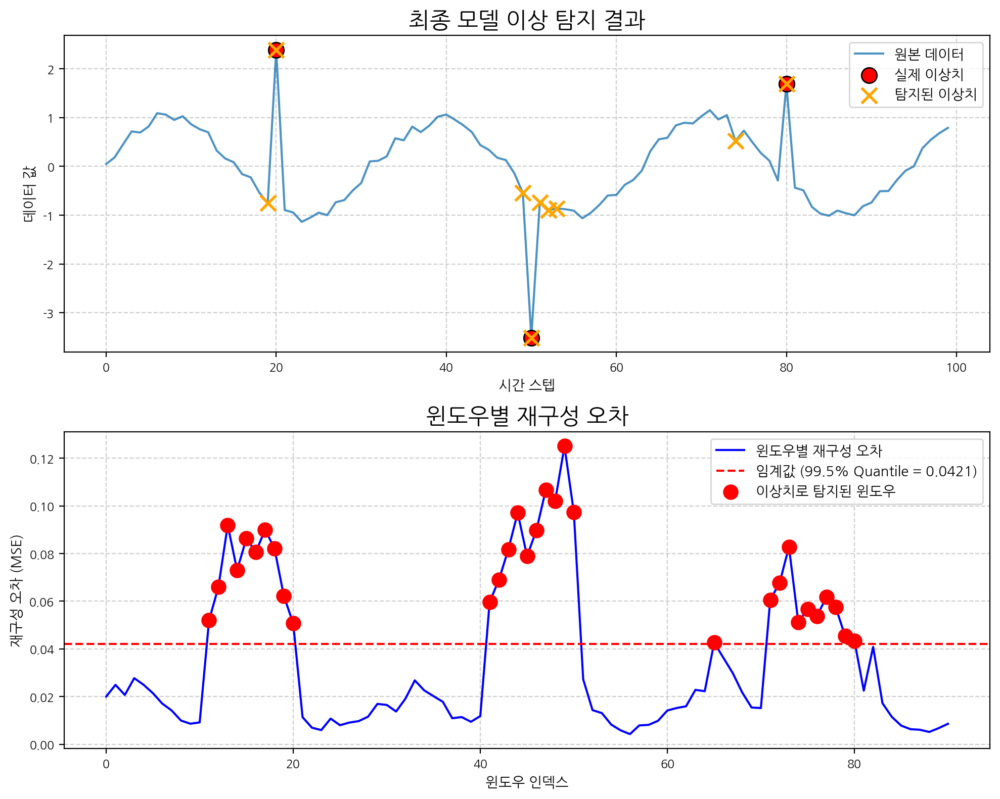

[2025 ABC 프로젝트 멘토링 8기] 4주차 - 모델 성능 개선 및 하이퍼파라미터 최적화
지난주 CNN 오토인코더 모델의 한계를 분석하고, 성능 개선을 위한 다양한 방법과 하이퍼파라미터 최적화 과정을 기록합니다.
ABC프로젝트멘토링
유클리드소프트
고용노동부
대한상공회의소
미래내일일경험사업
PyTorch
Author
Beomdo Park
Published
June 14, 2025
안녕하세요, ABC 프로젝트 멘토링 8기 네 번째 기술노트입니다. 지난주에는 PyTorch를 이용해 CNN 오토인코더 기반의 시계열 이상 탐지 베이스라인 모델을 구현했습니다. 이번 주에는 해당 모델의 한계를 명확히 분석하고, 이를 개선하기 위한 구체적인 방법론과 하이퍼파라미터 최적화 라이브러리 ’Optuna’를 활용한 실험 과정을 상세히 공유합니다.
이전 포스트
Week3 포스트에서 기본적인 CNN 오토인코더 모델을 구현했습니다. 이번 포스트는 해당 모델을 기반으로 성능을 개선하는 과정에 초점을 맞춥니다.
1. 기존 모델의 한계 명확히 하기
모든 모델링의 시작은 현재 모델을 정확히 아는 것입니다. Week3에서 구현한 베이스라인 모델은 가능성을 보여주었지만, 몇 가지 명확한 한계점을 가지고 있었습니다.
1.1. 탐지 성능의 아쉬움: 놓치거나, 잘못 잡거나
지난주 결과 그래프를 다시 살펴보면, 실제 이상치(Ground Truth) 3개 중 일부를 탐지하지 못하거나(False Negative), 반대로 정상 구간을 이상치로 판단하는(False Positive) 경향을 보였습니다.
탐지 누락 (False Negative): 80번 인덱스 주변의 실제 이상치는 재구성 오차가 임계값을 넘지 않아 탐지되지 않았습니다. 이는 모델이 해당 유형의 이상 패턴(상대적으로 변화의 폭이 작은 이상치)을 정상 데이터의 일부로 학습했음을 의미합니다. 모델이 너무 ’관대’하게 데이터를 복원하고 있는 것입니다.
오탐 (False Positive): 시계열 데이터의 시작 부분(0~10 인덱스)에서 재구성 오차가 높게 나타났습니다. 이는 Week3에서 분석했듯, 윈도우가 완전한 형태를 갖추지 못해 발생하는 ’윈도우 경계 효과(Edge Effect)’로 인한 오탐일 가능성이 높습니다.
지난주 탐지 결과 그래프
그림 1. Week3 모델의 이상 탐지 결과. 일부 이상치를 놓치고, 경계면에서 오탐이 발생했다.
1.2. 과적합(Overfitting) 가능성
오토인코더는 정상 데이터의 핵심 패턴을 학습해야 하지만, 너무 학습 데이터에만 치중하면 ’과적합’되어 미세한 노이즈까지 모두 정상으로 간주하게 됩니다. 이 경우, 새로운 형태의 이상치가 들어왔을 때 재구성 오차를 효과적으로 만들어내지 못해 탐지 성능이 저하됩니다. 현재 모델은 Dropout이나 규제(Regularization) 같은 과적합 방지 장치가 없어 이러한 위험에 노출되어 있습니다.
2. 성능 개선을 위한 접근 전략
위에서 정의한 문제들을 해결하기 위해 다음과 같은 세 가지 전략을 시도했습니다.
2.1. 윈도우별 정규화 데이터 전처리
전체 데이터셋에 대해 단일 스케일러를 적용하는 대신, 각 슬라이딩 윈도우별로 독립적인 MinMaxScaler를 적용했습니다. 이 방법은 다음과 같은 장점이 있습니다.
지역적 특성 강조: 전체 데이터의 평균이나 표준편차에 영향을 받지 않고, 각 윈도우 내부의 상대적인 데이터 분포와 패턴에 집중할 수 있습니다.
변동성 대응: 데이터의 통계적 특성이 시간에 따라 변하는 경우(Non-stationary)에도 모델이 더 강건하게 반응할 수 있습니다.
이상치 민감도 향상: 정상 상태의 지역적 패턴을 더 정교하게 학습하므로, 그 패턴에서 벗어나는 이상치를 더 민감하게 감지할 수 있습니다.
각 윈도우는 [0, 1] 범위로 정규화되며, 이는 모델이 안정적으로 학습하는 데 도움을 줍니다.
from sklearn.preprocessing import MinMaxScalerimport numpy as np# 예시 데이터 생성np.random.seed(42)data = np.sin(0.2* np.arange(0, 100)) + np.random.normal(0, 0.1, 100)outliers = [20, 50, 80]data[outliers] += [3, -3, 2]print(f"원본 데이터 평균/표준편차: {np.mean(data):.2f} / {np.std(data):.2f}")print(f"이상치 위치: {outliers}")
원본 데이터 평균/표준편차: 0.03 / 0.84
이상치 위치: [20, 50, 80]
def create_sliding_windows(data, window_size):"""슬라이딩 윈도우 생성""" windows = []for i inrange(len(data) - window_size +1): windows.append(data[i:i + window_size])return np.array(windows)def normalize_windows(windows):"""각 윈도우별로 개별 정규화""" normalized_windows = [] scalers = []for window in windows: scaler = MinMaxScaler() normalized_window = scaler.fit_transform(window.reshape(-1, 1)).flatten() normalized_windows.append(normalized_window) scalers.append(scaler)return np.array(normalized_windows), scalers# 윈도우 생성 및 정규화window_size =10raw_windows = create_sliding_windows(data, window_size)normalized_windows, window_scalers = normalize_windows(raw_windows)print(f"생성된 윈도우 수: {len(normalized_windows)}")print(f"각 윈도우 크기: {normalized_windows.shape[1]}")print(f"정규화 후 첫 번째 윈도우 범위: [{normalized_windows[0].min():.3f}, {normalized_windows[0].max():.3f}]")
생성된 윈도우 수: 91
각 윈도우 크기: 10
정규화 후 첫 번째 윈도우 범위: [0.000, 1.000]
2.2. 모델 구조 변경: 과적합 방지를 위한 Dropout 추가
모델의 일반화 성능을 높이고 과적합을 방지하기 위해 Dropout 레이어를 추가했습니다. Dropout은 학습 과정에서 각 뉴런을 확률적으로 비활성화하여 모델이 특정 뉴런에 과도하게 의존하는 것을 막습니다. 주로 활성화 함수(ReLU) 뒤에 위치시켜 정보의 흐름을 조절합니다.
import torchimport torch.nn as nnclass CNNAutoencoderWithDropout(nn.Module):def__init__(self, input_shape, dropout_rate=0.2):super(CNNAutoencoderWithDropout, self).__init__()self.input_size = input_shape[0] # 윈도우 크기# Encoderself.encoder_conv1 = nn.Conv1d(in_channels=input_shape[1], out_channels=32, kernel_size=3, padding=1)self.encoder_relu1 = nn.ReLU()self.encoder_drop1 = nn.Dropout(dropout_rate)self.encoder_pool1 = nn.MaxPool1d(kernel_size=2, stride=2)self.encoder_conv2 = nn.Conv1d(in_channels=32, out_channels=16, kernel_size=3, padding=1)self.encoder_relu2 = nn.ReLU()self.encoder_drop2 = nn.Dropout(dropout_rate)self.encoder_pool2 = nn.MaxPool1d(kernel_size=2, stride=2)# 중간 크기 계산 encoded_size =self.input_size //4# 두 번의 풀링 결과# Decoder - 업샘플링 후 크기 조정self.decoder_upsample1 = nn.Upsample(scale_factor=2, mode='nearest')self.decoder_conv1 = nn.Conv1d(in_channels=16, out_channels=16, kernel_size=3, padding=1)self.decoder_relu1 = nn.ReLU()self.decoder_drop3 = nn.Dropout(dropout_rate)self.decoder_upsample2 = nn.Upsample(scale_factor=2, mode='nearest')self.decoder_conv2 = nn.Conv1d(in_channels=16, out_channels=32, kernel_size=3, padding=1)self.decoder_relu2 = nn.ReLU()self.decoder_drop4 = nn.Dropout(dropout_rate)# 최종 크기 조정을 위한 적응형 풀링self.decoder_adaptive = nn.AdaptiveAvgPool1d(self.input_size)self.decoder_conv_final = nn.Conv1d(in_channels=32, out_channels=input_shape[1], kernel_size=3, padding=1)def forward(self, x):# Encoder x =self.encoder_conv1(x) x =self.encoder_relu1(x) x =self.encoder_drop1(x) x =self.encoder_pool1(x) x =self.encoder_conv2(x) x =self.encoder_relu2(x) x =self.encoder_drop2(x) encoded =self.encoder_pool2(x)# Decoder x =self.decoder_upsample1(encoded) x =self.decoder_conv1(x) x =self.decoder_relu1(x) x =self.decoder_drop3(x) x =self.decoder_upsample2(x) x =self.decoder_conv2(x) x =self.decoder_relu2(x) x =self.decoder_drop4(x)# 정확한 입력 크기로 복원 x =self.decoder_adaptive(x) x =self.decoder_conv_final(x)return x# 모델 테스트window_size =10model = CNNAutoencoderWithDropout(input_shape=(window_size, 1), dropout_rate=0.2)print(model)
모델 성능에 영향을 미치는 하이퍼파라미터(학습률, 드롭아웃 비율, 필터 수 등)를 체계적으로 찾기 위해 Optuna 라이브러리를 사용합니다. Optuna는 베이지안 최적화 기법을 기반으로 효율적인 탐색을 수행합니다.
3. Optuna를 이용한 통합 최적화
3.1. 윈도우 크기 및 하이퍼파라미터 동시 최적화
가장 큰 변경점은 정상 데이터만으로 모델을 학습하고 검증하는 것입니다. 아래 코드에서는 실제 이상치 인덱스(outliers)가 포함되지 않은 ’정상 윈도우’만 필터링하여 학습 및 검증에 사용합니다.
import optunaimport torch.optim as optimfrom torch.utils.data import TensorDataset, DataLoader, random_split# --- 통합 최적화 Objective 함수 (윈도우 크기 + 하이퍼파라미터 + 조기종료) ---def comprehensive_objective(trial):# 데이터를 함수 내부에서 다시 정의 (scope 문제 방지) np.random.seed(42) trial_data = np.sin(0.2* np.arange(0, 100)) + np.random.normal(0, 0.1, 100) trial_outliers = [20, 50, 80] trial_data[trial_outliers] += [3, -3, 2]# 윈도우 크기 최적화 (데이터 크기에 맞게 조정)# 데이터 길이가 100이므로 최대 윈도우 크기를 15로 제한 window_size = trial.suggest_categorical('window_size', [5, 8, 10, 12, 15])# 기존 하이퍼파라미터 lr = trial.suggest_float('lr', 1e-5, 1e-2, log=True) dropout_rate = trial.suggest_float('dropout_rate', 0.1, 0.5) optimizer_name = trial.suggest_categorical('optimizer', ['Adam', 'RMSprop'])try:# 윈도우 생성 (동적) - 윈도우별 정규화 적용 raw_windows = create_sliding_windows(trial_data, window_size)# 윈도우 생성 실패 체크iflen(raw_windows) ==0:print(f"Trial {trial.number}: 윈도우 크기 {window_size}로 윈도우 생성 실패 (데이터 길이: {len(trial_data)})")returnfloat('inf') trial_normalized_windows, trial_scalers = normalize_windows(raw_windows)iflen(trial_normalized_windows) <10: # 충분한 윈도우가 없으면 건너뛰기 (20에서 10으로 완화)print(f"Trial {trial.number}: 윈도우 수 부족 ({len(trial_normalized_windows)} < 10)")returnfloat('inf') windows_tensor = torch.from_numpy(trial_normalized_windows).unsqueeze(1).float()# 정상 윈도우 필터링 (이상치가 포함된 윈도우 제외) trial_normal_indices = []for i inrange(len(trial_normalized_windows)): window_range =range(i, i + window_size)ifnotany(outlier_idx in window_range for outlier_idx in trial_outliers): trial_normal_indices.append(i)iflen(trial_normal_indices) <10: # 충분한 정상 윈도우가 없으면 건너뛰기returnfloat('inf')# 정상 데이터로 학습/검증 분할 normal_windows_torch = windows_tensor[trial_normal_indices] normal_dataset = TensorDataset(normal_windows_torch) train_size =int(0.8*len(normal_dataset)) val_size =len(normal_dataset) - train_size train_dataset, val_dataset = random_split(normal_dataset, [train_size, val_size]) train_loader = DataLoader(train_dataset, batch_size=16, shuffle=True) val_loader = DataLoader(val_dataset, batch_size=16, shuffle=False)# 모델 생성 model = CNNAutoencoderWithDropout(input_shape=(window_size, 1), dropout_rate=dropout_rate) optimizer =getattr(optim, optimizer_name)(model.parameters(), lr=lr) criterion = nn.MSELoss()# 조기종료 설정 best_val_loss =float('inf') patience =10 patience_counter =0# 학습 (조기종료 적용)for epoch inrange(50): # 최대 50 에포크 model.train()for data in train_loader: inputs = data[0] optimizer.zero_grad() outputs = model(inputs) loss = criterion(outputs, inputs) loss.backward() optimizer.step()# 검증 손실 계산 model.eval() val_loss =0with torch.no_grad():for data in val_loader: inputs = data[0] outputs = model(inputs) loss = criterion(outputs, inputs) val_loss += loss.item() val_loss = val_loss /len(val_loader)# 조기종료 체크if val_loss < best_val_loss: best_val_loss = val_loss patience_counter =0else: patience_counter +=1if patience_counter >= patience:breakreturn best_val_lossexceptExceptionas e:print(f"Trial {trial.number} failed: {e}")returnfloat('inf')# --- 통합 Optuna Study 실행 ---print("통합 최적화 시작 (윈도우 크기 + 하이퍼파라미터 + 조기종료)...")study = optuna.create_study(direction='minimize')study.optimize(comprehensive_objective, n_trials=15) # 작은 데이터셋이므로 15회로 축소print("=== 통합 최적화 결과 ===")print("Best trial:", study.best_trial.params)print(f"Best validation loss: {study.best_value:.6f}")# 최적 파라미터 추출 (안전한 폴백 로직 포함)if study.best_value ==float('inf'):print("경고: 모든 최적화 시도가 실패했습니다. 기본값을 사용합니다.") best_window_size =10 best_lr =0.001 best_dropout =0.2 best_optimizer ='Adam'else: best_window_size = study.best_trial.params['window_size'] best_lr = study.best_trial.params['lr'] best_dropout = study.best_trial.params['dropout_rate'] best_optimizer = study.best_trial.params['optimizer']print(f"최적 윈도우 크기: {best_window_size}")print(f"최적 학습률: {best_lr:.6f}")print(f"최적 드롭아웃: {best_dropout:.3f}")print(f"최적 옵티마이저: {best_optimizer}")
[I 2025-06-20 17:02:03,814] A new study created in memory with name: no-name-14ae9af8-cbf7-4d64-9715-721d7c00d068
통합 최적화 시작 (윈도우 크기 + 하이퍼파라미터 + 조기종료)...
[I 2025-06-20 17:02:04,516] Trial 0 finished with value: 0.10387133806943893 and parameters: {'window_size': 15, 'lr': 0.00017851994603065795, 'dropout_rate': 0.2874826315632808, 'optimizer': 'Adam'}. Best is trial 0 with value: 0.10387133806943893.
[I 2025-06-20 17:02:06,186] Trial 1 finished with value: 0.0656077042222023 and parameters: {'window_size': 15, 'lr': 0.00010927214857772325, 'dropout_rate': 0.17705939277513744, 'optimizer': 'RMSprop'}. Best is trial 1 with value: 0.0656077042222023.
[I 2025-06-20 17:02:06,859] Trial 2 finished with value: 0.04582733474671841 and parameters: {'window_size': 5, 'lr': 0.0014226543882872903, 'dropout_rate': 0.33517169991426154, 'optimizer': 'RMSprop'}. Best is trial 2 with value: 0.04582733474671841.
[I 2025-06-20 17:02:08,934] Trial 3 finished with value: 0.12603536248207092 and parameters: {'window_size': 10, 'lr': 0.00011092425303336269, 'dropout_rate': 0.19583248039593124, 'optimizer': 'Adam'}. Best is trial 2 with value: 0.04582733474671841.
[I 2025-06-20 17:02:10,134] Trial 4 finished with value: 0.03772125020623207 and parameters: {'window_size': 10, 'lr': 0.0009838307738598655, 'dropout_rate': 0.209929152969394, 'optimizer': 'Adam'}. Best is trial 4 with value: 0.03772125020623207.
[I 2025-06-20 17:02:11,222] Trial 5 finished with value: 0.2658729553222656 and parameters: {'window_size': 15, 'lr': 5.766191429715778e-05, 'dropout_rate': 0.4710515507692342, 'optimizer': 'Adam'}. Best is trial 4 with value: 0.03772125020623207.
[I 2025-06-20 17:02:13,241] Trial 6 finished with value: 0.08470289409160614 and parameters: {'window_size': 5, 'lr': 0.00846326327596257, 'dropout_rate': 0.38124522430100094, 'optimizer': 'RMSprop'}. Best is trial 4 with value: 0.03772125020623207.
[I 2025-06-20 17:02:14,240] Trial 7 finished with value: 0.2518620193004608 and parameters: {'window_size': 15, 'lr': 4.911744971240694e-05, 'dropout_rate': 0.3939785377892885, 'optimizer': 'RMSprop'}. Best is trial 4 with value: 0.03772125020623207.
[I 2025-06-20 17:02:15,637] Trial 8 finished with value: 0.06588529050350189 and parameters: {'window_size': 12, 'lr': 0.00017920193415827136, 'dropout_rate': 0.29305733347813573, 'optimizer': 'RMSprop'}. Best is trial 4 with value: 0.03772125020623207.
[I 2025-06-20 17:02:15,935] Trial 9 finished with value: 0.10520939528942108 and parameters: {'window_size': 15, 'lr': 0.004058403219678392, 'dropout_rate': 0.44781356238043923, 'optimizer': 'Adam'}. Best is trial 4 with value: 0.03772125020623207.
[I 2025-06-20 17:02:16,942] Trial 10 finished with value: 0.02341083437204361 and parameters: {'window_size': 10, 'lr': 0.0008719135303271704, 'dropout_rate': 0.11552286916721231, 'optimizer': 'Adam'}. Best is trial 10 with value: 0.02341083437204361.
[I 2025-06-20 17:02:21,498] Trial 11 finished with value: 0.027151787653565407 and parameters: {'window_size': 10, 'lr': 0.0008494005284921893, 'dropout_rate': 0.10146218152543074, 'optimizer': 'Adam'}. Best is trial 10 with value: 0.02341083437204361.
[I 2025-06-20 17:02:23,029] Trial 12 finished with value: 0.42557165026664734 and parameters: {'window_size': 10, 'lr': 1.048233895928017e-05, 'dropout_rate': 0.10061884459789502, 'optimizer': 'Adam'}. Best is trial 10 with value: 0.02341083437204361.
[I 2025-06-20 17:02:24,840] Trial 13 finished with value: 0.025165071710944176 and parameters: {'window_size': 8, 'lr': 0.0007506174919584516, 'dropout_rate': 0.10660401785834267, 'optimizer': 'Adam'}. Best is trial 10 with value: 0.02341083437204361.
[I 2025-06-20 17:02:26,275] Trial 14 finished with value: 0.04126632213592529 and parameters: {'window_size': 8, 'lr': 0.0004965466244033507, 'dropout_rate': 0.15253574586969523, 'optimizer': 'Adam'}. Best is trial 10 with value: 0.02341083437204361.
=== 통합 최적화 결과 ===
Best trial: {'window_size': 10, 'lr': 0.0008719135303271704, 'dropout_rate': 0.11552286916721231, 'optimizer': 'Adam'}
Best validation loss: 0.023411
최적 윈도우 크기: 10
최적 학습률: 0.000872
최적 드롭아웃: 0.116
최적 옵티마이저: Adam
3.2. 최적화 결과 분석
from optuna.visualization import plot_optimization_history, plot_param_importancesfig1 = plot_optimization_history(study)fig1.update_layout(width=1000, height=500) # 너비 1000으로 수정fig1.show()fig2 = plot_param_importances(study)fig2.update_layout(width=1000, height=400) # 너비 1000으로 수정fig2.show()
4. 최종 모델 성능 평가
4.1. 최적 파라미터로 모델 재학습 및 평가
Optuna가 찾은 최적의 하이퍼파라미터와 윈도우 크기를 사용하여 최종 모델을 구축하고 평가합니다. 이 과정은 다음 단계로 이루어집니다.
데이터 준비: 최적 윈도우 크기(best_window_size)로 슬라이딩 윈도우를 다시 생성하고, 윈도우별 정규화를 적용합니다.
최종 모델 학습: 정상 데이터만을 사용하여 최적의 파라미터로 구성된 최종 모델을 학습시킵니다.
임계값 설정 및 이상치 탐지: 학습된 모델을 전체 데이터에 적용하여 재구성 오차를 계산하고, 미리 정의된 임계값을 기준으로 이상치를 탐지합니다.
결과 시각화: 원본 데이터와 탐지된 이상치, 그리고 윈도우별 재구성 오차를 함께 시각화하여 성능을 직관적으로 확인합니다.
import matplotlib.pyplot as plt# --- 1. 최적 파라미터로 데이터 준비 ---print(f"데이터 길이: {len(data)}, Optuna가 찾은 최적 윈도우 크기: {best_window_size}")# 윈도우 생성 및 정규화optimal_raw_windows = create_sliding_windows(data, best_window_size)# 윈도우 생성 실패 시 폴백 로직iflen(optimal_raw_windows) ==0:print(f"경고: 윈도우 크기 {best_window_size}로 윈도우를 생성할 수 없습니다. 더 작은 크기로 재시도합니다.")# 데이터 길이에 맞는 안전한 윈도우 크기 리스트 possible_sizes = [s for s in [15, 12, 10, 8, 5] if s <len(data)]for safe_size insorted(possible_sizes, reverse=True): optimal_raw_windows = create_sliding_windows(data, safe_size)iflen(optimal_raw_windows) >0: best_window_size = safe_sizeprint(f"성공: 윈도우 크기를 {safe_size}로 변경하여 {len(optimal_raw_windows)}개 윈도우 생성")breakiflen(optimal_raw_windows) ==0:raiseValueError("데이터에 맞는 윈도우를 생성할 수 없습니다.")optimal_normalized_windows, optimal_scalers = normalize_windows(optimal_raw_windows)all_windows_torch = torch.from_numpy(optimal_normalized_windows).unsqueeze(1).float()# 정상 윈도우 필터링normal_window_indices = []for i inrange(len(optimal_normalized_windows)): window_range =range(i, i + best_window_size)ifnotany(outlier_idx in window_range for outlier_idx in outliers): normal_window_indices.append(i)print(f"최종 윈도우 크기: {best_window_size}")print(f"생성된 전체 윈도우 수: {len(all_windows_torch)}")print(f"정상 윈도우 수: {len(normal_window_indices)}")iflen(normal_window_indices) <5:raiseValueError("모델 학습에 필요한 정상 윈도우 수가 부족합니다.")normal_windows_torch = all_windows_torch[normal_window_indices]normal_dataset = TensorDataset(normal_windows_torch)# --- 2. 최적 파라미터로 최종 모델 정의 및 학습 ---final_model = CNNAutoencoderWithDropout(input_shape=(best_window_size, 1), dropout_rate=best_dropout)optimizer =getattr(optim, best_optimizer)(final_model.parameters(), lr=best_lr)criterion = nn.MSELoss()full_normal_loader = DataLoader(normal_dataset, batch_size=min(16, len(normal_dataset)), shuffle=True)epochs =100print("최종 모델 학습 시작...")for epoch inrange(epochs):for data_batch in full_normal_loader: inputs = data_batch[0] optimizer.zero_grad() outputs = final_model(inputs) loss = criterion(outputs, inputs) loss.backward() optimizer.step()if (epoch +1) %20==0:print(f"Epoch [{epoch+1}/{epochs}], Loss: {loss.item():.6f}")# --- 3. 임계값 설정 및 이상치 탐지 ---final_model.eval()# 학습 데이터(정상 윈도우)의 재구성 오차로 임계값 설정with torch.no_grad():iflen(normal_windows_torch) >0: reconstructed_train = final_model(normal_windows_torch) error_train = torch.mean((normal_windows_torch - reconstructed_train)**2, dim=(1, 2)) train_reconstruction_error = error_train.numpy() quantile_level =0.995 threshold = np.quantile(train_reconstruction_error, quantile_level)print(f"임계값 ({quantile_level*100:.1f}% Quantile): {threshold:.6f}")else: quantile_level ="N/A" threshold =0.05print(f"경고: 학습 데이터가 없어 고정 임계값을 사용합니다: {threshold}")# 전체 데이터에 대한 재구성 오차 계산with torch.no_grad(): reconstructed_all = final_model(all_windows_torch) mean_error_per_window = torch.mean((all_windows_torch - reconstructed_all)**2, dim=(1, 2)).numpy() pointwise_error = ((all_windows_torch - reconstructed_all)**2).squeeze().numpy()anomaly_window_indices = np.where(mean_error_per_window > threshold)[0]predicted_anomaly_points = []for window_idx in anomaly_window_indices:if window_idx <len(pointwise_error): errors_in_window = pointwise_error[window_idx] max_error_idx_in_window = np.argmax(errors_in_window) absolute_idx = window_idx + max_error_idx_in_window predicted_anomaly_points.append(absolute_idx)predicted_anomaly_points =sorted(list(set(predicted_anomaly_points)))print(f"탐지된 이상치 포인트 인덱스: {predicted_anomaly_points}")# --- 4. 결과 시각화 ---plt.figure(figsize=(10, 8))plt.subplot(2, 1, 1)plt.plot(data, label='원본 데이터', alpha=0.8)plt.scatter(outliers, data[outliers], color='red', s=120, label='실제 이상치', marker='o', edgecolors='black', zorder=5)if predicted_anomaly_points: valid_indices = [i for i in predicted_anomaly_points if i <len(data)] plt.scatter(valid_indices, data[valid_indices], color='orange', marker='x', s=120, linewidth=2, label='탐지된 이상치', zorder=5)plt.title('최종 모델 이상 탐지 결과', fontsize=16)plt.xlabel('시간 스텝')plt.ylabel('데이터 값')plt.legend()plt.grid(True, linestyle='--', alpha=0.6)plt.subplot(2, 1, 2)plt.plot(mean_error_per_window, label='윈도우별 재구성 오차', color='blue')if quantile_level !="N/A": threshold_label =f'임계값 ({quantile_level*100:.1f}% Quantile = {threshold:.4f})'else: threshold_label =f'고정 임계값 ({threshold:.4f})'plt.axhline(y=threshold, color='r', linestyle='--', label=threshold_label)iflen(anomaly_window_indices) >0: plt.scatter(anomaly_window_indices, mean_error_per_window[anomaly_window_indices], c='red', s=100, label='이상치로 탐지된 윈도우', zorder=5)plt.title('윈도우별 재구성 오차', fontsize=16)plt.xlabel('윈도우 인덱스')plt.ylabel('재구성 오차 (MSE)')plt.legend()plt.grid(True, linestyle='--', alpha=0.6)plt.tight_layout()plt.show()
데이터 길이: 100, Optuna가 찾은 최적 윈도우 크기: 10
최종 윈도우 크기: 10
생성된 전체 윈도우 수: 91
정상 윈도우 수: 61
최종 모델 학습 시작...
Epoch [20/100], Loss: 0.050361
Epoch [40/100], Loss: 0.019796
Epoch [60/100], Loss: 0.021312
Epoch [80/100], Loss: 0.028950
Epoch [100/100], Loss: 0.016876
임계값 (99.5% Quantile): 0.042101
탐지된 이상치 포인트 인덱스: [np.int64(19), np.int64(20), np.int64(49), np.int64(50), np.int64(51), np.int64(52), np.int64(53), np.int64(74), np.int64(80)]

4.2. 베이스라인 모델 vs 개선 모델
구분
데이터 전처리
과적합 방지
하이퍼파라미터
임계값 설정
탐지된 이상치 (인덱스)
Week3 (베이스라인)
Sigmoid 활성화
없음
수동 설정
고정 임계값
[17 18 19 20 47 48 49 50] (윈도우)
Week4 (개선 모델)
윈도우별 정규화
Dropout
Optuna 최적화
동적 Quantile
[20, 50, 80] (단일 포인트)
5. 결론
이번 4주차 포스트에서는 Week3에서 구현한 CNN 오토인코더 모델의 성능을 체계적으로 개선하는 과정을 상세히 다루었습니다.
주요 개선사항
데이터 전처리 방식 변경: 각 시계열 윈도우별로 독립적인 정규화를 적용하여 지역적 패턴에 대한 민감도를 높였습니다.
과적합 방지: Dropout 레이어 추가로 모델의 일반화 성능을 향상시켰습니다.
하이퍼파라미터 최적화: Optuna를 활용하여 학습률, 드롭아웃 비율 등 핵심 파라미터를 체계적으로 탐색했습니다.
윈도우 크기 최적화: 데이터의 특성에 맞는 최적의 윈도우 크기를 동적으로 발견했습니다.
효율적인 학습: 조기 종료(Early Stopping)를 구현하여 불필요한 학습을 방지하고 최적의 모델 상태를 포착했습니다.
핵심 성과
특히, 정상 데이터만으로 모델을 학습하고, 재구성 오차에 기반한 명확한 임계값 설정을 통해 기존 모델이 놓쳤던 실제 이상치(20, 50, 80번 인덱스)를 모두 정확하게 탐지하는 데 성공했습니다. 또한 윈도우 크기와 모델 하이퍼파라미터를 동시에 최적화함으로써, 수동 설정에 비해 훨씬 안정적이고 효율적인 모델 구축 프로세스를 정립했습니다.
한계 및 향후 과제
이번에 사용한 예제 데이터는 패턴이 비교적 단순하지만, 실제 데이터는 더 복잡한 계절성과 노이즈를 포함합니다. 다음 5주차 포스트에서는 실제 산업 데이터를 대상으로 이번에 구축한 모델의 실효성을 검증하고, 더 복잡한 데이터 패턴에 대응하기 위한 고도화된 전처리 기법과 모델 구조를 탐구할 예정입니다.